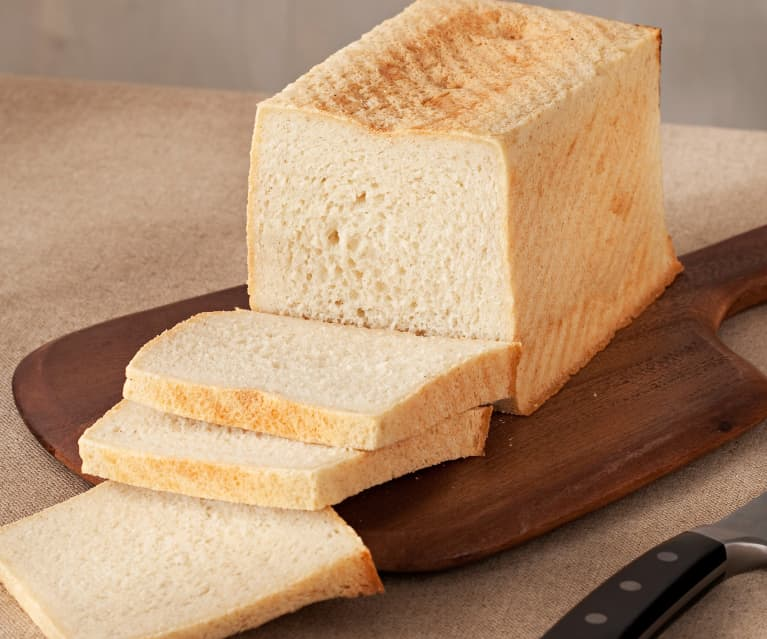
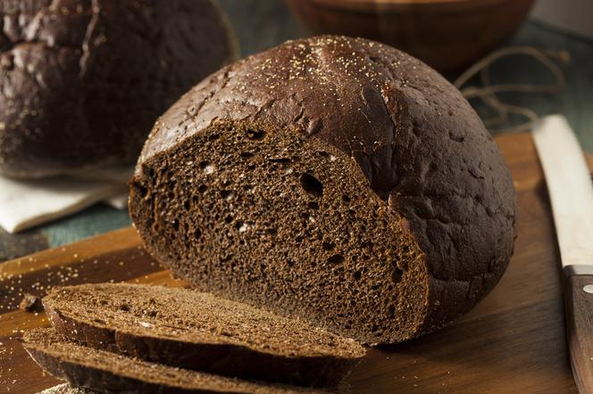

Chleb tostowy
To wyborowe pieczywo pszenne.

Dodatek tłuszczu i zakwasu żytniego powoduje dłuższą świeżość oraz wilgotność gotowego wyrobu, bardzo elastyczny miękisz kromki. Doskonały do zapiekania, na grzanki i tosty.
Pumpernikiel
Pumpernikiel to ciemny chleb razowy, pieczony w formie, na zakwasie, z mąki żytniej oraz dodatkiem melasy, miodu lub ekstraktu z jabłek oraz słodu i soli.

Stronę przygotowali:
Michał Skowronek
Filip Wędzik